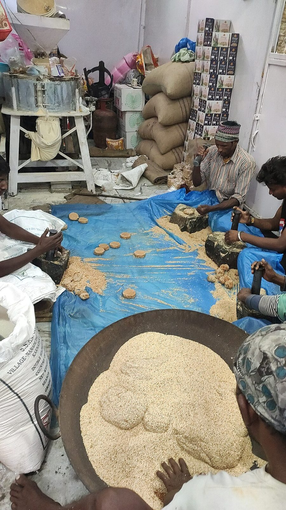

Prep10 min
Cook30 min
Total40 min
Serves6
Difficultymoderate
Contains: sesame
Checked against the ingredient list for ten allergens: milk, egg, fish, crustaceans, tree nuts, peanuts, sesame, mustard, soy and gluten. Brands vary, so read the label on anything new to you.
Ingredients
Quantities for 6.
- 400g, white, hulled Sesame
- 300g, dark, broken small Jaggery
- 60 ml Water
- 1 tsp, for greasing Neutral Oil
- 0.5 tsp, seeds crushed Cardamomoptional
Cookware
kadhai, stovetop
Before you start
- Pick the sesame over for grit and have it completely dry before roasting.
- Grease your palms, the rolling surface and a broad knife before you start on the jaggery syrup. Once it sets you have about two minutes to work.
- Work on a cool day or in a cool kitchen; tilkut refuses to set crisp in humidity.
Method
- Dry-roast the sesame in a heavy kadhai on medium heat for 6 to 8 minutes, stirring constantly, until the seeds turn pale gold and start popping.Take them off while they are still blond. Browned sesame turns the tilkut bitter.
- Tip the roasted sesame onto a cold plate to stop the cooking and cool it completely.
- Pound about two-thirds of the sesame coarsely in a mortar, or pulse briefly in a grinder, leaving the rest whole.Stop before it turns to paste. Sesame releases oil fast.
- Melt the jaggery with the water in the same kadhai on low heat, stirring until it dissolves, about 5 minutes.
- Boil the syrup for 6 to 8 minutes to the hard-ball stage: a drop into cold water should set into a firm ball you can snap.This is the make-or-break test. Soft syrup gives you chewy chikki, not tilkut.
- Take the pan off the heat, stir in the crushed cardamom, then work in all the sesame quickly until evenly coated.
- Turn the mass out onto a greased surface and, while it is just cool enough to handle, pinch off walnut-sized pieces.
- Flatten each piece into a 6cm disc with your greased palm and press the pounded sesame in firmly.Press hard. The pounding is what makes tilkut crumble rather than stick to your teeth.
- Leave the discs to cool and harden on a rack for 30 minutes before stacking.
Storage
Stores 3 weeks in an airtight tin at room temperature, layered with paper. Keep it away from the fridge and from any moisture, which turns it sticky.
Nutrition Good estimate
Medium protein: 12 g a serving, 8% of the calories
| Per serving118 g | Per 100 g | |
|---|---|---|
| Calories | 583 kcal | 496 kcal |
| Protein | 11.8 g | 10 g |
| Carbohydrate | 65.9 g | 56 g |
| of which sugars | 50.1 g | 42 g |
| Fibre | 8.0 g | 7 g |
| Fat | 33.9 g | 29 g |
| of which saturated | 4.7 g | 4 g |
| of which unsaturated | 27.7 g | 24 g |
Nearest database match used for jaggery. Estimated from raw ingredients using USDA FoodData Central.
Times, yields, allergens and nutrition are guidance. Use your own judgement on doneness and on storing. More in About.